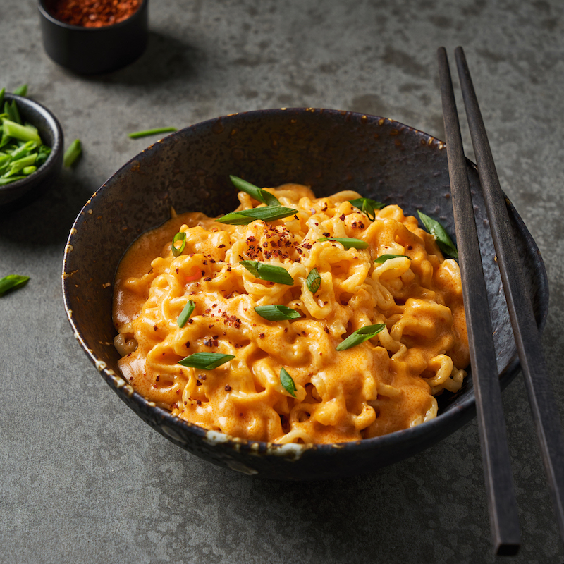

Cheesy Ramen Noodles

Description
Cheesy ramen noodles are a dish that combines ramen noodles with cheese for a creamy, indulgent, and savory flavor.
The cheese adds fat and carbohydrates, which enriches the broth, and the glutamates in the cheese contribute to the umami flavor.
Ingredients
- 2 cups water
- 1 (3 ounce) package any flavor ramen noodles
- 1 slice American cheese
Steps
- Gather all ingredients.
- Bring water to a boil in a saucepan. Add ramen noodles and cook until tender, about 2 minutes.
- Pour out water, then stir in seasoning packet and cheese until well blended.